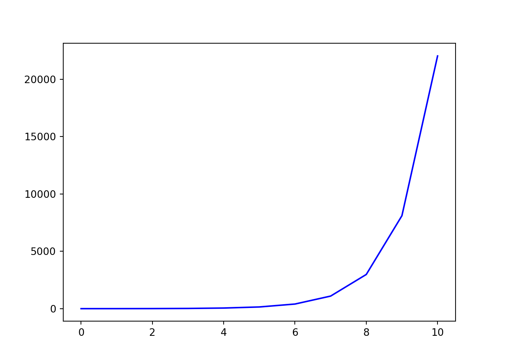
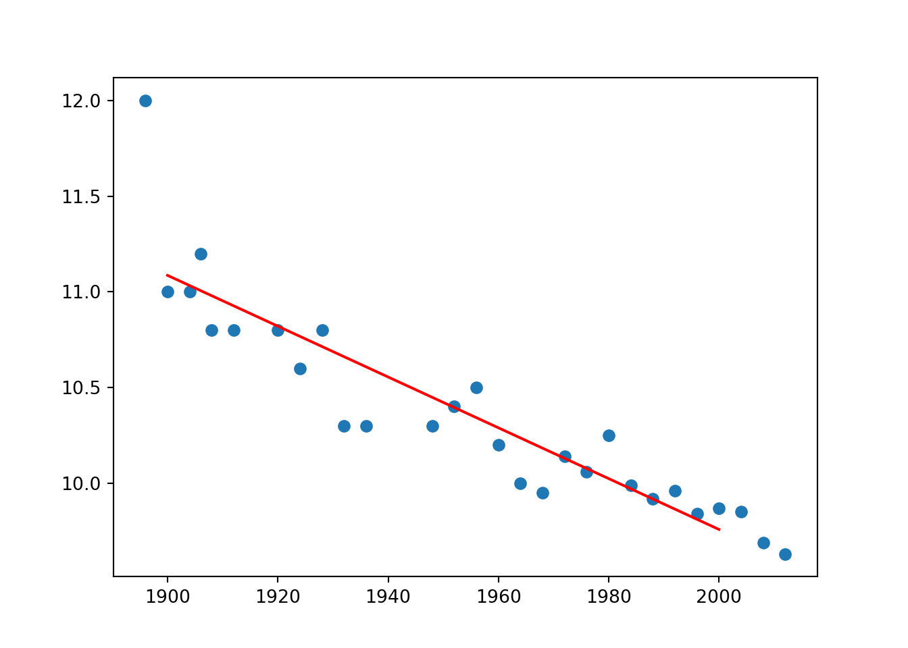
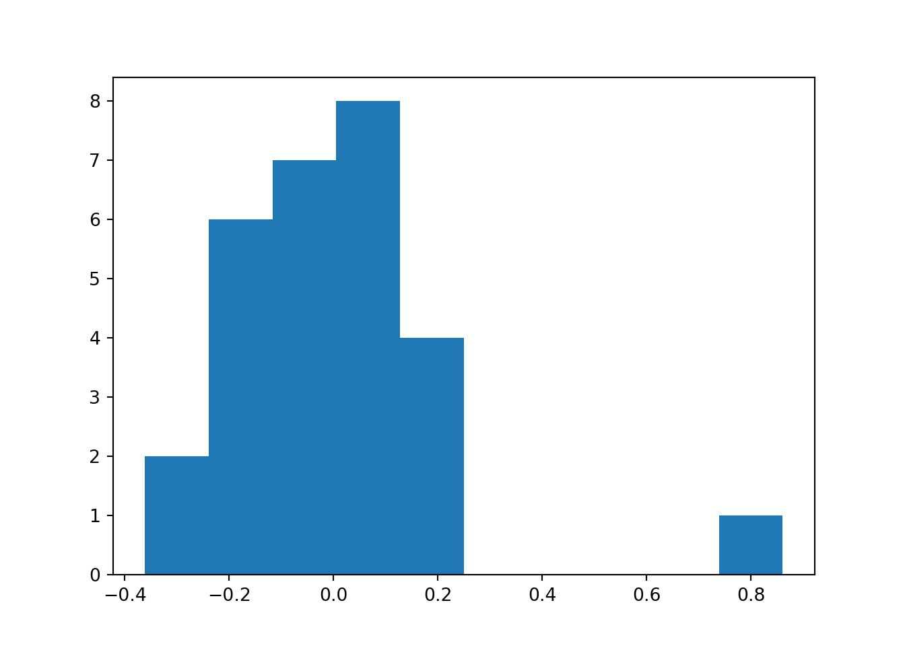
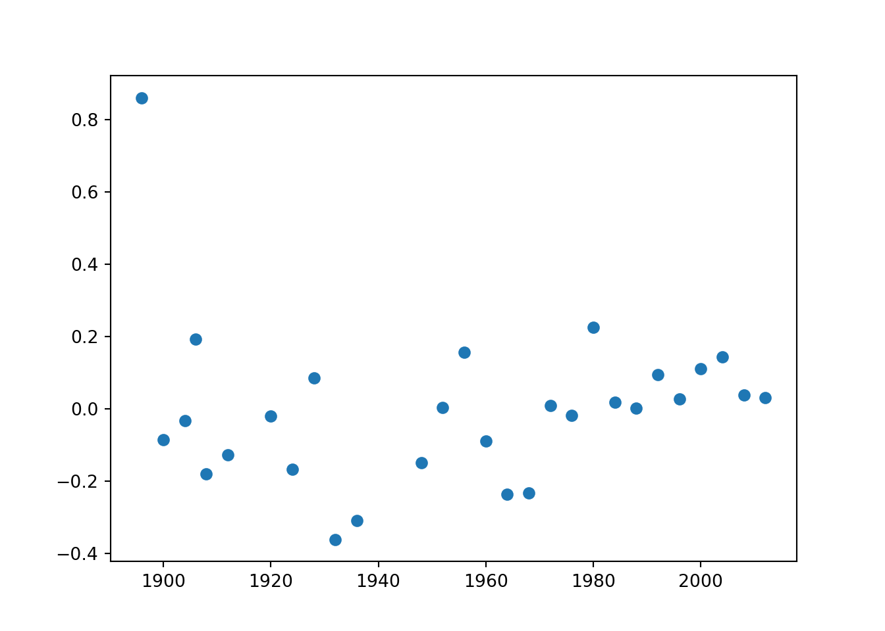
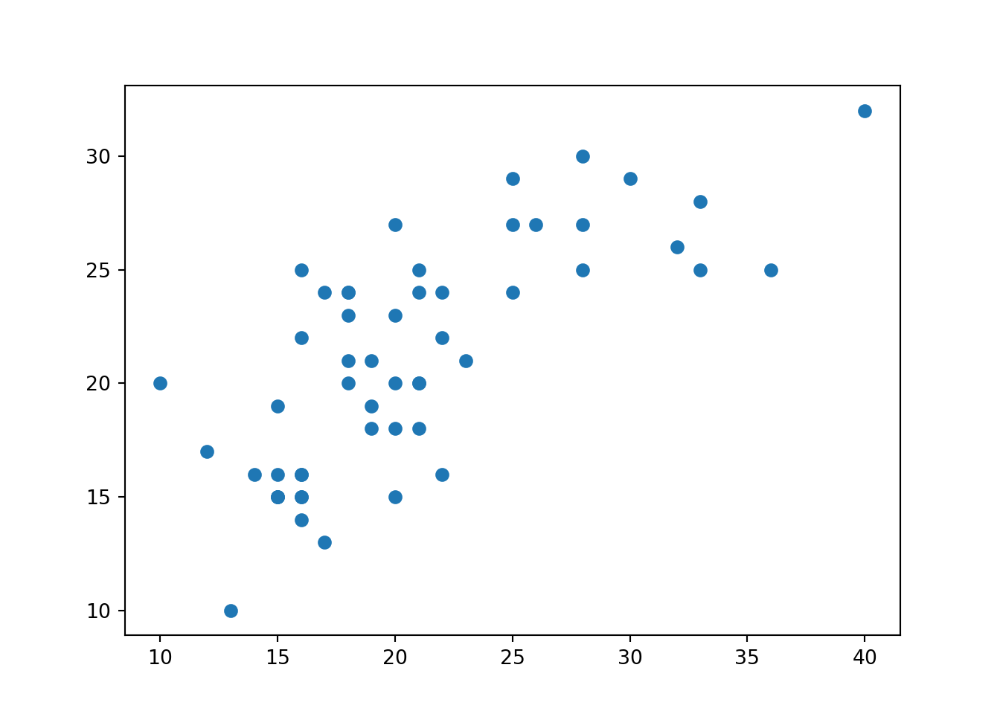
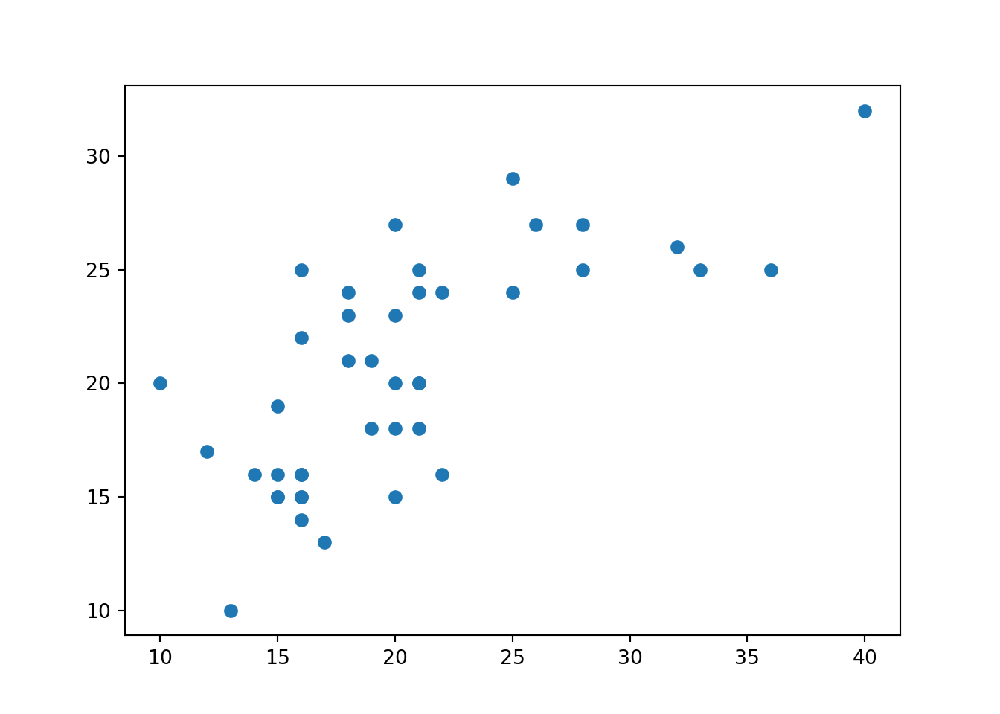
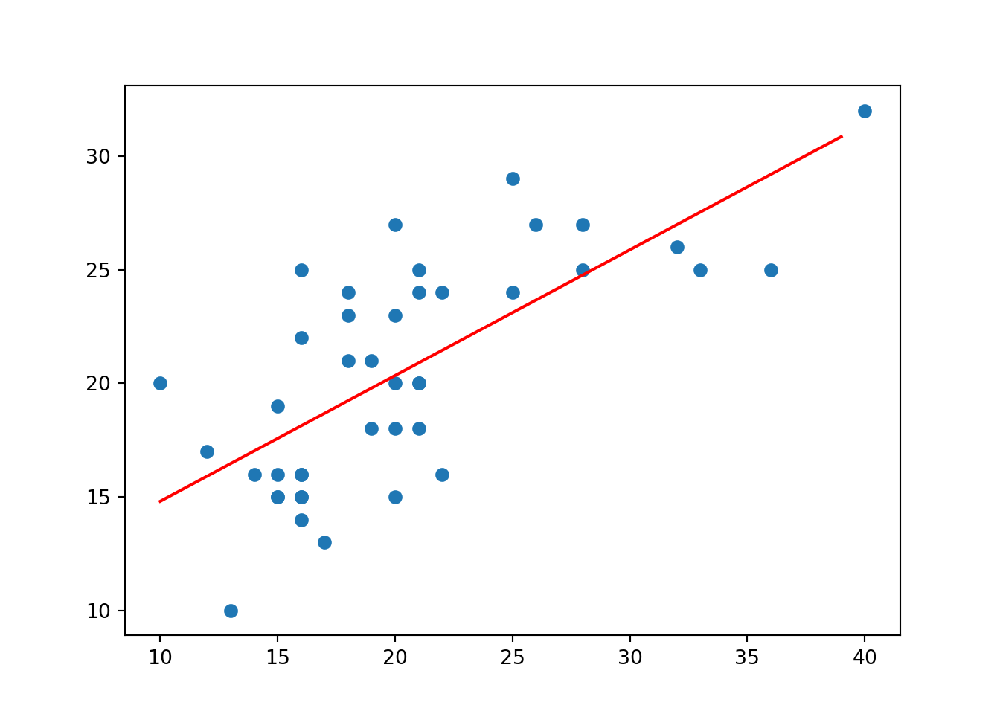

5 scikit-learn
import numpy as np
import pandas as pd
import matplotlib.pyplot as pltimport sklearn
# check version
sklearn.__version__ ## '0.24.2'5.1 Linear Model
from sklearn import linear_model
from sklearn.metrics import mean_squared_error, r2_score# data
olympic = pd.read_csv("https://raw.githubusercontent.com/sdrogers/fcmlcode/master/R/data/olympics/male100.csv", names = ["year","time"])olympic.head()## year time
## 0 1896 12.0
## 1 1900 11.0
## 2 1904 11.0
## 3 1906 11.2
## 4 1908 10.8olympic.tail()## year time
## 23 1996 9.84
## 24 2000 9.87
## 25 2004 9.85
## 26 2008 9.69
## 27 2012 9.63plt.scatter('year', 'time', data = olympic)## <matplotlib.collections.PathCollection object at 0x00000000334F36A0>plt.show()
# create an instance of a linear regression model where we will estimate the intercept
model = linear_model.LinearRegression(fit_intercept = True)scikit-learn requires that the features (x) be a matrix and the response y be a one-dimension array.
5.1.1 Prepare X
# Create an X matrix using the x values
x = olympic.year.values
x.shape## (28,)type(x)## <class 'numpy.ndarray'>X = x.reshape([-1, 1]) # here - 1 means "I don't know how many..."# if you know the dimensions
X = x.reshape((28, 1))# Check the shape
print(X.shape)## (28, 1)Alternative? Try the following
X2 = olympic[['year']]
X2.shape## (28, 1)5.1.2 Prepare y
y = olympic.time
y.shape## (28,)type(y)# fine! note the difference between year and time; we had to reshape year## <class 'pandas.core.series.Series'>5.1.3 Fit
# Now fit the model
model.fit(X, y)## LinearRegression()print(model.coef_) # coefficient## [-0.01327532]print(model.intercept_) # intercept## 36.309120409672225.1.4 Prediction
# New X as np array
prediction_x = np.linspace(1900, 2000, 101)
# reshape it
prediction_x = prediction_x.reshape([-1, 1]) # recall -1 stands for "i don't know"model.predict(prediction_x)## array([11.08600515, 11.07272982, 11.0594545 , 11.04617918, 11.03290385,
## 11.01962853, 11.00635321, 10.99307788, 10.97980256, 10.96652723,
## 10.95325191, 10.93997659, 10.92670126, 10.91342594, 10.90015061,
## 10.88687529, 10.87359997, 10.86032464, 10.84704932, 10.833774 ,
## 10.82049867, 10.80722335, 10.79394802, 10.7806727 , 10.76739738,
## 10.75412205, 10.74084673, 10.72757141, 10.71429608, 10.70102076,
## 10.68774543, 10.67447011, 10.66119479, 10.64791946, 10.63464414,
## 10.62136881, 10.60809349, 10.59481817, 10.58154284, 10.56826752,
## 10.5549922 , 10.54171687, 10.52844155, 10.51516622, 10.5018909 ,
## 10.48861558, 10.47534025, 10.46206493, 10.4487896 , 10.43551428,
## 10.42223896, 10.40896363, 10.39568831, 10.38241299, 10.36913766,
## 10.35586234, 10.34258701, 10.32931169, 10.31603637, 10.30276104,
## 10.28948572, 10.2762104 , 10.26293507, 10.24965975, 10.23638442,
## 10.2231091 , 10.20983378, 10.19655845, 10.18328313, 10.1700078 ,
## 10.15673248, 10.14345716, 10.13018183, 10.11690651, 10.10363119,
## 10.09035586, 10.07708054, 10.06380521, 10.05052989, 10.03725457,
## 10.02397924, 10.01070392, 9.99742859, 9.98415327, 9.97087795,
## 9.95760262, 9.9443273 , 9.93105198, 9.91777665, 9.90450133,
## 9.891226 , 9.87795068, 9.86467536, 9.85140003, 9.83812471,
## 9.82484939, 9.81157406, 9.79829874, 9.78502341, 9.77174809,
## 9.75847277])5.1.5 Scatter Plot: Actual vs Fitted
plt.scatter(x, y)## <matplotlib.collections.PathCollection object at 0x00000000360B8CC0>plt.plot(prediction_x, model.predict(prediction_x), color = 'red')## [<matplotlib.lines.Line2D object at 0x00000000360B8F98>]plt.show()
5.1.6 Residual Plot
# find residuals
residuals = y - model.predict(X)
np.mean(residuals) # check mean## 1.9032394707859825e-16plt.hist(residuals)## (array([2., 6., 7., 8., 4., 0., 0., 0., 0., 1.]), array([-0.36119479, -0.23898595, -0.11677712, 0.00543172, 0.12764055,
## 0.24984939, 0.37205822, 0.49426705, 0.61647589, 0.73868472,
## 0.86089356]), <a list of 10 Patch objects>)plt.show()
plt.plot(x, residuals, "o")## [<matplotlib.lines.Line2D object at 0x0000000036141198>]plt.show()
5.2 Train-Test
import numpy as np
import pandas as pd
import matplotlib.pyplot as plt
from sklearn import linear_model, preprocessing, model_selection
from sklearn.model_selection import train_test_split, cross_val_scoretrain_test_split() takes a list of arrays and splits each array into two arrays (a training set and a test set) by randomly selecting rows or values.
5.2.1 Example
# x is our predictor matrix
X = np.arange(20).reshape((2, -1)).T
print(X)## [[ 0 10]
## [ 1 11]
## [ 2 12]
## [ 3 13]
## [ 4 14]
## [ 5 15]
## [ 6 16]
## [ 7 17]
## [ 8 18]
## [ 9 19]]# y is a numeric output - for regression methods
y = np.arange(10)
print(y)## [0 1 2 3 4 5 6 7 8 9]# z is a categorical output - for classification methods
z = np.array([0,0,0,0,0,1,1,1,1,1])
print(z)## [0 0 0 0 0 1 1 1 1 1]We can use train_test_split() on each array individually.
What happens?
train_test_split(X, test_size = 1/4, random_state = 1)## [array([[ 4, 14],
## [ 0, 10],
## [ 3, 13],
## [ 1, 11],
## [ 7, 17],
## [ 8, 18],
## [ 5, 15]]), array([[ 2, 12],
## [ 9, 19],
## [ 6, 16]])]type(train_test_split(X, test_size = 1/4, random_state = 1))## <class 'list'>Store them
X_train, X_test = train_test_split(X, test_size = 1/4, random_state = 1)
print(X_train)## [[ 4 14]
## [ 0 10]
## [ 3 13]
## [ 1 11]
## [ 7 17]
## [ 8 18]
## [ 5 15]]print(X_test)## [[ 2 12]
## [ 9 19]
## [ 6 16]]y_train, y_test = train_test_split(y, test_size = 1/4, random_state = 1)
print(y_train)## [4 0 3 1 7 8 5]print(y_test)## [2 9 6]We can also apply it to multiple arrays simultaneously.
X_train, X_test, y_train, y_test = train_test_split(X, y, test_size = 1/4, random_state = 1)
print(X_train)## [[ 4 14]
## [ 0 10]
## [ 3 13]
## [ 1 11]
## [ 7 17]
## [ 8 18]
## [ 5 15]]print(X_test)## [[ 2 12]
## [ 9 19]
## [ 6 16]]print(y_train)## [4 0 3 1 7 8 5]print(y_test)## [2 9 6]If you have a categorical variable, the stratify argument ensures
that you’ll get an appropriate number of each category in the resulting split.
For this purpose, we previously created z.
X_train, X_test, z_train, z_test = train_test_split(
X, z, test_size = 1/4, random_state = 1, stratify = z
)print(X_train)## [[ 4 14]
## [ 0 10]
## [ 5 15]
## [ 7 17]
## [ 1 11]
## [ 9 19]
## [ 2 12]]print(X_test)## [[ 3 13]
## [ 8 18]
## [ 6 16]]print(z_train)## [0 0 1 1 0 1 0]print(z_test)## [0 1 1]5.2.2 Another Example
# Example data: ironslag
iron = pd.read_csv('https://raw.githubusercontent.com/bhaswar-chakma/toolbox/main/data/ironslag.csv')iron.head()## chemical magnetic
## 0 24 25
## 1 16 22
## 2 24 17
## 3 18 21
## 4 18 20iron.shape## (53, 2)Magnetic test is cheaper; chemical test is more accurate.Can we use the magnetic test to predict the chemical test result?
X= magnetic test resulty= chemical test
plt.scatter(iron.magnetic, iron.chemical)
Create a hold-out set using train-test split
train, test = train_test_split(
iron, test_size = 1/5, random_state = 1
)train.shape## (42, 2)train.head()## chemical magnetic
## 3 18 21
## 21 13 17
## 49 25 36
## 38 23 18
## 41 15 16test.shape## (11, 2)test.head()## chemical magnetic
## 30 27 25
## 2 24 17
## 51 28 33
## 32 20 18
## 31 22 22plt.scatter(train.magnetic, train.chemical)
Use only the training data to try out possible models
# sklearn requires our predictor variables to be in a two dimensional array
# reshape to have 1 column
# the -1 in reshape means I don't want to figure out all the necessary dimensions
# i want 1 column, and numpy, you figure out how many rows I need
X = train.magnetic.values.reshape(-1,1)
X.shape## (42, 1)y = train.chemical.values
y.shape## (42,)np.corrcoef(train.magnetic.values, train.chemical.values)## array([[1. , 0.70876994],
## [0.70876994, 1. ]])# r-squared
np.corrcoef(train.magnetic.values, train.chemical.values)[0,1] ** 2## 0.5023548215592254Fit a linear model between x and y
linear = linear_model.LinearRegression()
linear.fit(X, y)## LinearRegression()linear.score() is the \(R^2\) value.
# linear.score is the R^2 value
# how much error is reduced from no model (variance or MSE)
# vs having the regression model
linear.score(X, y)## 0.5023548215592256x_predict = np.arange(10, 40).reshape(-1,1) # values to be used for prediction
lin_y_hat = linear.predict(x_predict) # use the values and predictplt.scatter(X, y)## <matplotlib.collections.PathCollection object at 0x0000000036132CF8>plt.plot(x_predict, lin_y_hat, c = 'red')
5.3 Cross Validation
Linear Model
# shuffle split says 'shuffle the data' and split it into 5 equal parts
cv = model_selection.ShuffleSplit(n_splits = 5, test_size = 0.3, random_state=0)
cv_linear = model_selection.cross_val_score(linear, X, y, cv = cv)
print(cv_linear)## [0.5811901 0.5322723 0.45145614 0.13698027 0.65315849]print(np.mean(cv_linear))## 0.4710114602819653Polynomial Fit - Quadratic
# preprocessing polynomial features creates a polynomial based on X
quad = preprocessing.PolynomialFeatures(2)
quadX = quad.fit_transform(X)
quad_model = linear_model.LinearRegression()
quad_model.fit(quadX, y)## LinearRegression()cv_quad = model_selection.cross_val_score(quad_model, quadX, y, cv = cv)
print(cv_quad)## [ 0.20489832 0.39310396 0.24068822 -0.11114126 0.58637808]print(np.mean(cv_quad))## 0.2627854641006778Cubic Fit
cube = preprocessing.PolynomialFeatures(3)
cubeX = cube.fit_transform(X)
cube_model = linear_model.LinearRegression()
cube_model.fit(cubeX, y)## LinearRegression()cv_cube = model_selection.cross_val_score(cube_model, cubeX, y, cv = cv)
print(cv_cube)## [-0.01197637 -0.80626221 0.08937258 -0.2144141 -0.62784165]print(np.mean(cv_cube))## -0.3142243517318586Y ~ log X model
log_transform = preprocessing.FunctionTransformer(np.log)
logX = log_transform.fit_transform(X)
logX_model = linear_model.LinearRegression()
logX_model.fit(logX, y)## LinearRegression()cv_logX = model_selection.cross_val_score(logX_model, logX, y, cv = cv)
print(cv_logX)## [ 0.47681194 0.52326867 0.36527782 -0.08925939 0.61651106]print(np.mean(cv_logX))## 0.3785220199147977